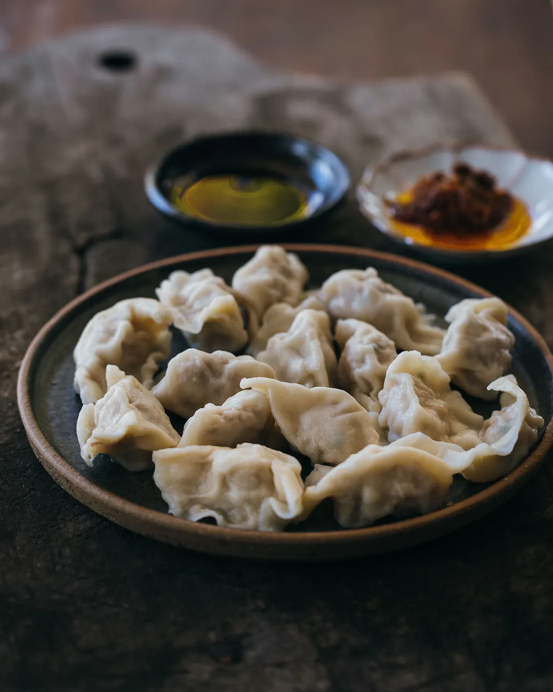

How to make basic dumplings
For a visual aid, look at this video.
Just about every Chinese family will have a freezer stocked with homemade dumplings.
Jiaozi are the classic homestyle dumpling found all over China. You can customise the filling to be whatever you like, and make different batches depending on your own personal preference.
The first time you try your hand at homemade dumplings, it may seem like a chore to do, but they taste so much better (and cheaper) than ones that you would buy in the supermarket. Don't worry, the second time you'll make them better and faster, and if you persevere making your own dumplings will soon become a breeze (and actually a great way to relax too).
Makes about 100 dumplings
Ingredients
- 1/4 Chinese cabbage
- 1kg fatty pork mince
- 2cm ginger, peeled and grated
- 2 cloves garlic, finely minced (optionnal)
- 1 tsp salt
- 1 tbsp Shaoxing wine
- 1/2 tsp sugar
- 1/4 tsp white pepper
- 1/2 cup garlic chives, cut into 1cm pieces
Hot water dumpling skins
- 3 cups plain four, plus plenty of extra for dusting
- 1-1 1/2 cups boiling water
How-to
- For the dumpling skins, place the flour in a the bowl of a stand mixer with the dough hook. Add the hot water and knead for about 10 minutes until the dough is smooth. Remove from the stand mixer and wrap in floured cling film and rest for at least 30 minutes.
- For the filling, first bring a large saucepan of water to the boil, add the cabbage and cook for about 5 minutes until tender. Drain well, refresh in cold water and then drain again. With your hands, squeeze out as much liquid from the cabbage as possible and finely chop it, squeezing out the liquid again after it's chopped.
- Combine the pork, ginger, garlic, salt, Shaoxing wine, sugar and pepper in the bowl of a stand mixer with the beater attachment and beat for about 10 minutes until the mixture is springy. Fold through the chopped cabbage and garlic chives at low speed. Refrigerate the filling for 30 minutes. If you don't want to use a stand mixer both the dough and the filling are easily made by hand. Just knead the dough by hand, and mix the filling in a large bowl.
- Refer to the video for the process of rolling and folding. Cut about a quarter of the dough from the piece of dough and roll it into a cylinder around 2cm in diameter. Cut the cylinder into 1cm lengths and roll into a circle around 1mm thick and 7cm in diameter. Add about 2 tsp of filling to the centre of the skin and fold the dumpling as you like.
- You can freeze the dumplings in batches on a tray lined with baking paper, or cook them by boiling, steaming or fry-steaming them. For boiled dumplings, place the dumplings in boiling water, and then each time the water returns to the boil add about ½ a cup of cold water to reduce the temperature. When the dumplings float to the surface, cook for a further 1 minute and then remove.
Tips
Don't worry too much about folding. The technique shown in the video is very simple for homemade skins, but if you're using commercial skins I'd suggest just folding them in a half-moon just to get started. You can go onto fancier folding techniques later as you get more confident.
Tasting the filling is all-important. You don't want to fold 100 dumplings and find out that they don't taste any good. Taste the filling and adjust the seasoning if necessary BEFORE you start folding.
You can customise the filling however you like. Try adding herbs like dill or coriander, additional vegetables and egg, prawns, spices like Sichuan peppercorn. You can really add just about anything here.
Original recipe